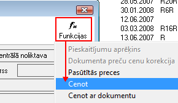
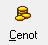
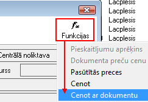
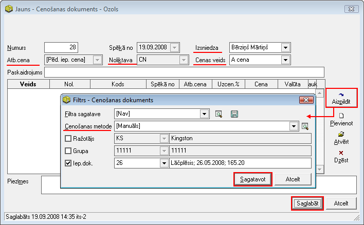
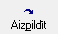

Preču cenošana no Iepirkumu dokumenta¶
Jāatlasa vēlamie iepirkuma dokumenti un atverot iepirkuma dokumentu, kura iepirkuma saturs ir preces, dokumenta logā jānospiež poga .. image:: images_ozols/25814.png
- scale
100%
un jāizvēlas funkcija Cenot:
{kind=link}
Izvēloties cenošanas funkciju, tiek atvērt cenošanas logs:

Spēkā no: datums, no kura stājas spēkā izveidotās cenas;
Atb.cena: atbalsta cena (pēdēja preces iepirkuma cena, kura tiek ņemta no iepirkuma dokumenta satura ieraksta);
Noliktava: noliktava uz kuru attieksies izveidotās cenas;
Cenas veids: jāizvēlas, kuram no nodefinētajiem cenu veidiem tiks izveidotas preču cenas;
Uzcenojums (%): ir iespējams ierakstīt noteiktu uzcenojuma procentu, un, nospiežot pogu
{kind=link}
, visas iepirkuma dokumenta preces tiek uzcenotas.
Lai cenas tiktu saglabātas, jānospiež poga .. image:: images_ozols/25621.png
- scale
100%
.

Ir iespējams arī manuāli ierakstīt Cenu vai cenu ar PVN, un programma automātiski aprēķinās uzcenojumu (%).
Izveidotās cenas tiek saglabātas cenu sarakstā .
Iepirkuma dokumentā, izvēloties funkciju Cenot ar dokumentu:
{kind=link}
Teik atvērt Cenošanas dokuments:
{kind=link}
Automātiski Atbalsta cena tiek norādīta Pēdējā iepirkuma cena;
Spēkā no: datums, no kura stājas spēkā izveidotās cenas;
Noliktava: noliktava tiek automātiski notādītā tā, kura ir norādīta iepirkuma dokumentā;
Izsniedza: iespējams norādīt atbildīgo personu ;
Cenas veids: jānorāda cenu veids ;
Tad, nospiežot pogu
{kind=link}
, tiek atvērt logs, kur jānorāda cenošanas metode (ja norāda manuālo metodi, tad cenošana jāveic manuāli norādot procentuālu uzcenojumu), un tiek norādīts iepirkuma dokuments, no kura tiek veikta cenošana. Jānospiež poga

, lai tiktu veikta cenošana un aizpildītos cenošanas dokumenta saturs. Cenošanas dokuments tiek saglabāts Cenošanas dokumentu žurnālā , kur tiek saglabāti arī manuāli pievienotie cenošanas dokumenti .